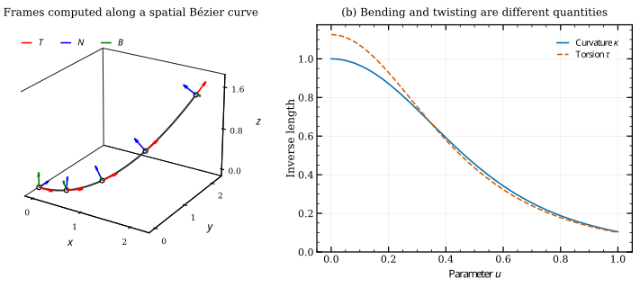

Frenet–Serret frames and torsion#
A curve describes position. Its local frame describes direction: where the curve is heading, where it bends and how its bending plane twists. These quantities are useful for placing cross-sections, interpreting spatial paths and defining curvature-dependent objectives.
Assume a regular 3D curve, with nonzero speed and nonzero curvature at the point being evaluated. Derivatives below are with respect to the original parameter \(u\) unless an \(s\) subscript is shown.
Tangent, principal normal and binormal#
The unit tangent follows increasing parameter:
The component of \(\mathbf C''\) perpendicular to \(\mathbf T\) describes bending. Normalizing it gives the principal normal. The binormal completes a right-handed orthonormal frame:
The normal points toward the instantaneous center of curvature. The span of \(\mathbf T\) and \(\mathbf N\) is the osculating plane: the plane that locally captures the curve’s bending to second order.


An exact Bézier representation of \(\mathbf C(u)=(2u,2u^2,1.5u^3)\).
The repository’s plot_frenet_serret() draws the computed tangent (red),
principal normal (blue) and binormal (green). The right panel evaluates
curvature and torsion along the same curve.#
Curvature measures bending#
Using arc length \(s\), curvature is the rate at which the tangent changes:
Curvature has inverse-length units. A circle of radius \(R\) has \(\kappa=1/R\); a straight segment has zero curvature. This expression is independent of a regular change of parameter speed. For a planar curve, embed its derivatives in 3D or use the magnitude of \(x'y''-y'x''\) in the numerator.
The radius \(1/\kappa\) describes the local osculating circle. Matching curvature magnitude alone does not guarantee a smooth join: tangent and curvature direction matter too. See geometric continuity.
Torsion measures twisting of the bending plane#
The binormal changes when the osculating plane rotates. Torsion measures this rotation per unit arc length:
Torsion is signed and also has inverse-length units. A planar curve with nonzero curvature has zero torsion. A nonzero value indicates that the local bending plane changes along the path; its sign depends on spatial handedness. Together the frame evolves according to the Frenet–Serret equations:
These equations explain why curvature and torsion are distinct: curvature turns the tangent within the osculating plane; torsion rotates that plane. Curvature needs second derivatives; torsion needs third derivatives. A rational curve can have nonzero derivatives above its polynomial degree, so the degree alone does not determine whether torsion vanishes.
Calculate and plot the frame#
import numpy as np
import matplotlib.pyplot as plt
import nurbspy as nrb
nrb.set_plot_options()
curve = nrb.NurbsCurve(np.array([[0., 2/3, 4/3, 2.],
[0., 0., 2/3, 2.],
[0., 0., 0., 1.5]]))
u = np.linspace(0., 1., 100)
T = curve.get_tangent(u)
N = curve.get_normal(u)
B = curve.get_binormal(u)
kappa = curve.get_curvature(u)
tau = curve.get_torsion(u)
fig, ax = curve.plot(frenet_serret=True)
Frame vectors have shape (ndim, N); curvature and torsion have one scalar per
sample. Both NumPy and JAX offer these methods and plotting helpers. Use a 3D
curve for the full spatial frame; a 2D return value cannot represent an
out-of-plane binormal.
Planar normal conventions#
For an oriented planar curve, a useful alternative to the principal normal is the left normal \(\mathbf n_L=(-T_y,T_x)\). It is defined even on a regular straight segment and does not flip when signed planar curvature changes sign. It need not point toward the center of curvature.
The backend conventions differ: NumPy get_normal() returns the principal
normal and get_normal_2D() returns the left normal. JAX get_normal() uses
the left-normal convention for a 2D curve and the principal normal for a 3D
curve. Choose the convention explicitly when constructing offsets or matching
frames between backends.
Regularity and practical limits#
At zero speed the tangent is undefined. At zero curvature, the principal normal and binormal are undefined, and the torsion formula divides by zero. Some implementations return zero vectors or zero scalars in these cases; these are numerical conventions, not valid Frenet frames. A frame may flip abruptly near an inflection even when the curve looks smooth.
At a repeated knot, the derivative order needed by the requested quantity must exist. Otherwise, discuss separate one-sided frames rather than a unique frame at the knot. Evaluate diagnostics away from such joins when checking orthogonality and derivative formulas.
For sweeping a profile through nearly straight or inflected regions, a rotation-minimizing frame is often more suitable. Such a frame is a different construction and is not supplied by these Frenet methods.
Reproduce the figure#
python docs/generate_theory_images.py --only frames
The figure script uses nurbspy’s frame plotter,
checks frame orthonormality and compares torsion with the exact spatial cubic.
Download the vector PDF.